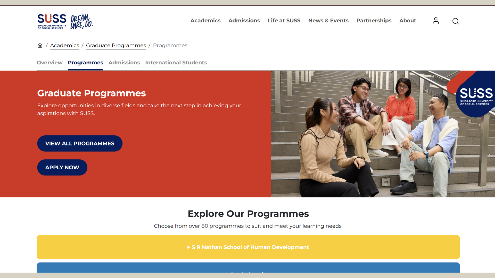
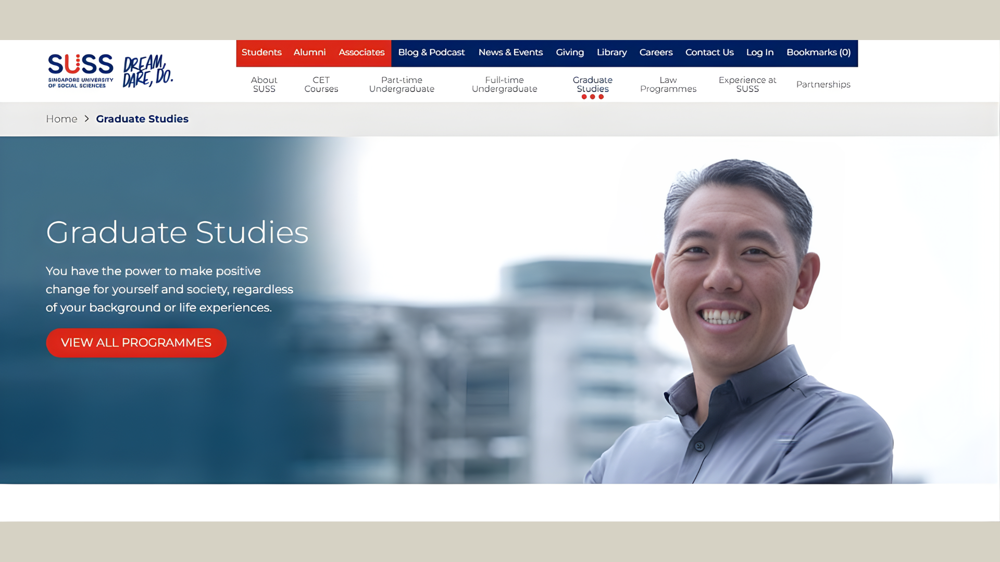
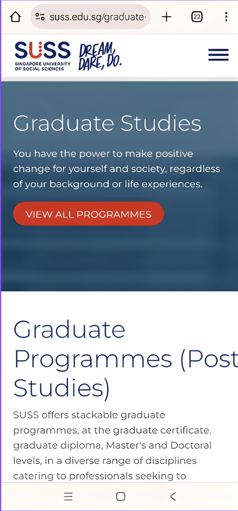
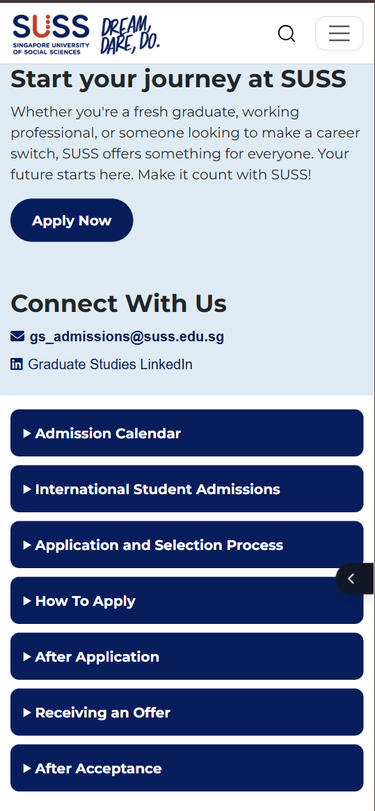
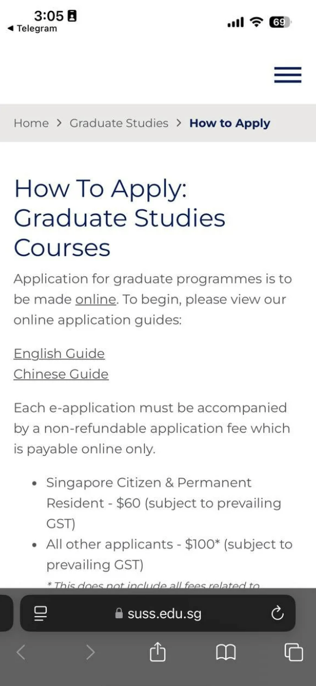
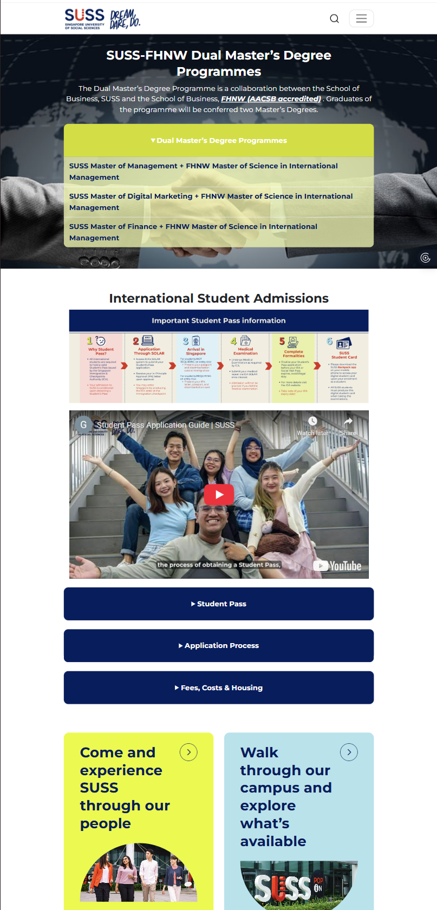
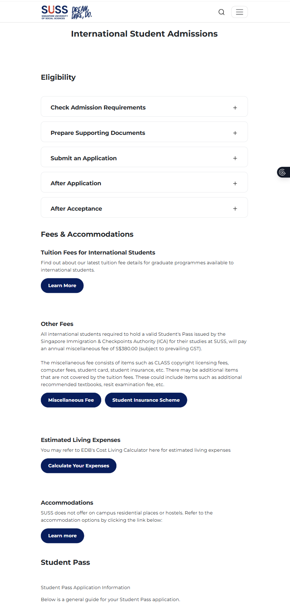
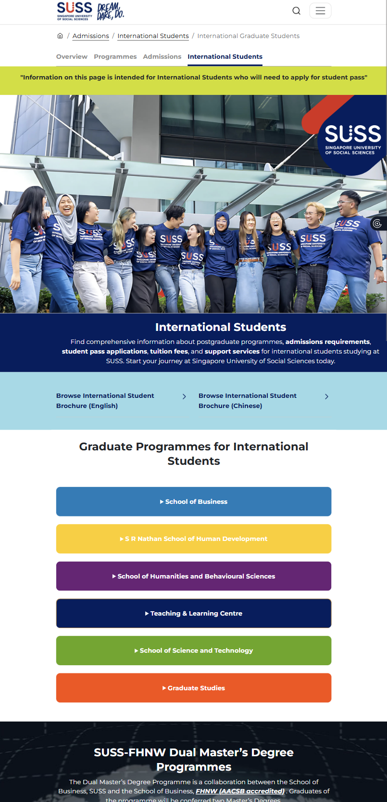
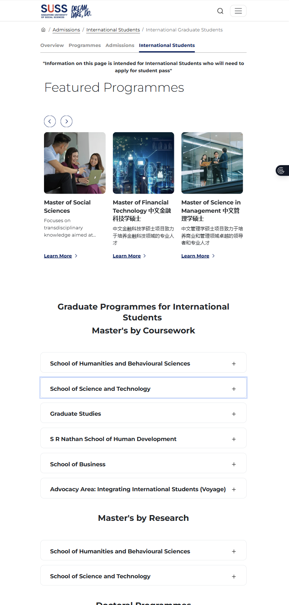

Contact: nqnhu1@email.com
Redesigning the digital gateway for lifelong learners and international post-graduates.
Frontend Developer / UX Designer


The Singapore University of Social Sciences (SUSS) is one of Singapore’s autonomous universities, focused on lifelong and applied learning for local and international learners.
The Graduate Studies (GS) website is a key digital touchpoint for prospective postgraduate students, providing programme information, admissions guidance, and student support resources.
As part of the Graduate Studies team, I redesigned and enhanced key sections of the GS website to improve clarity, navigation, and usability across desktop and mobile.
With a growing range of postgraduate programmes and rising international interest, users faced difficulty finding critical information such as admissions steps, tuition fees, student pass requirements, and dialogue sessions.
This presented an opportunity to simplify complex content, strengthen the Graduate Studies brand, and create a clearer and more intuitive experience for prospective students.
A practical, content-led UX approach was applied, balancing user needs with real-world constraints and stakeholder requirements.
Improved navigation for mobile users with clearer menu and shortcut links.



Reworked content sections and quick links for faster access to international student information.



